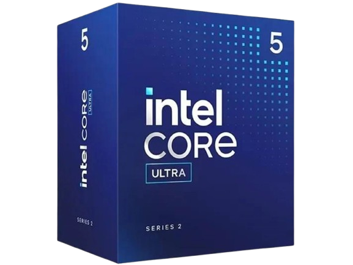

För dig som är spelintresserad och behöver en dator för moderna spel för en av de billigaste möjliga priserna som finns! Här kommer du få se var man kan skaffa gamingdatorer designade för spel för en av de lägsta priserna möjligt. Du kommer informeras om rekommenderade hemsidor att kolla på och få hjälp med vad du behöver och hur du hittar de billigaste datorerna tillsammans med länkar till butikerna. Satsad mest för spelintresserade ungdomar och vuxna ungefär mellan 16 - 25 år med låg till kanske medel ekonomi. Butikerna skickar allt online runt hela Sverige så det spelar ingen roll vart man bor, det kan vara storstäder eller landsbygd.